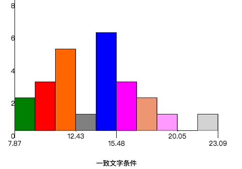
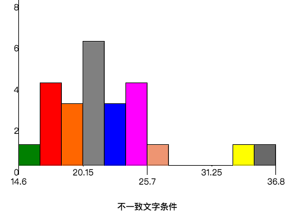

在斯特鲁普颜色与文字实验中，参与者得到了一列文字，每个文字都用一种油墨颜色展示。参与者的任务是将文字的打印颜色大声说出来。这项任务有两个条件：一致文字条件，和不一致文字条件。在一致文字条件中，显示的文字是与它们的打印颜色匹配的颜色词，如“红色”、“蓝色”。在不一致文字条件中，显示的文字是与它们的打印颜色不匹配的颜色词，如“紫色”、“橙色”。在每个情况中，将计量说出同等大小的列表中的墨色名称的时间。每位参与者必须全部完成并记录每种条件下使用的时间。
根据这个实验的描述，我们可以得出：
从这里可以下载到我们需要的采样数据，对得到的数据在Excel中做一下预处理得到如下表格：
| \(X_{Cong}\) | \(X_{Incong}\) | \(X_D\) |
|---|---|---|
| 12.079 | 19.278 | 7.199 |
| 16.791 | 18.741 | 1.95 |
| 9.564 | 21.214 | 11.65 |
| 8.63 | 15.687 | 7.057 |
| 14.669 | 22.803 | 8.134 |
| 12.238 | 20.878 | 8.64 |
| 14.692 | 24.572 | 9.88 |
| 8.987 | 17.394 | 8.407 |
| 9.401 | 20.762 | 11.361 |
| 14.48 | 26.282 | 11.802 |
| 22.328 | 24.524 | 2.196 |
| 15.298 | 18.644 | 3.346 |
| 15.073 | 17.51 | 2.437 |
| 16.929 | 20.33 | 3.401 |
| 18.2 | 35.255 | 17.055 |
| 12.13 | 22.158 | 10.028 |
| 18.495 | 25.139 | 6.644 |
| 10.639 | 20.429 | 9.79 |
| 11.344 | 17.425 | 6.081 |
| 12.369 | 34.288 | 21.919 |
| 12.944 | 23.894 | 10.95 |
| 14.233 | 17.96 | 3.727 |
| 19.71 | 22.058 | 2.348 |
| 16.004 | 21.157 | 5.153 |
其中：
通过计算我们很容易得到这组数据相关的一些描述性统计指标：
| \(\bar{X}_{Cong}\) | \(\bar{X}_{Incong}\) |
|---|---|
| 14.051 | 22.016 |
| \(Median_{Cong}\) | \(Median_{Incong}\) |
|---|---|
| 14.357 | 21.018 |
| \(s_{Cong}\) | \(s_{Incong}\) |
|---|---|
| 3.559 | 4.797 |
利用网络，我们可以很方便的得到以上数据的直方图。
一致文字条件：

不一致文字条件：

尽管我们的样本数量很少，但通过以上的两张直方图我们可以看出，在忽略了异常值的影响之后，不管是在一致文字条件下，还是在不一致文字条件下，参与者完成实验花费的时间的分布仍然近似于正态分布。
同时考察上一节得到的均值和中位数，可以发现均值近似于中位数，并且都落在频率最高的区间内，由此证实了我们的观察。
按照斯特鲁普效应的含义，这个实验的目的在于检验一个现象：当有一个新的刺激出现时，如果新的刺激特征与原先的刺激不相同，会干扰人们的认知，使人们的所需的反应时间变长1。所以我们做出假设：
数学表述：
\[ H_0: \mu_{Incong} <= \mu_{Cong} \] \[ H_A: \mu_{Incong} > \mu_{Cong} \]
其中：
尽管我们拥有的只是样本数据，我们并不知道所有人完成这项试验所需要的时间，即我们并不知道总体均值以及总体标准偏差等总体参数，但是根据试验的描述，我们可以知道参与者是从总体人群中随机抽选出的，并且每个参与者完成试验花费的时间完全不受其余参与者的影响，即样本具有独立性。所以我们可以利用样本数据对总体数据做合理的估计：
所以这个假设适用t检验。
同时由于这两组样本是对同一组参与者在两种不同的条件（一致文字条件和不一致文字条件）下进行的两次试验的结果，所以它们构成了一对相依样本。我们可以定义：
\[ \mu_D = \mu_{Incong} - \mu_{Cong} \]
\(\mu_D\)定义为不一致文字条件下比一致文字条件下需要多花费的时间，则以上的假设可以简化为：
\[ H_0: \mu_D <= 0 \] \[ H_0: \mu_D > 0 \]
综上所述，针对这个假设，我们采用正向的单尾t检验进行检验。
我们设定可能性指标：
\[ \alpha=0.05 \]
计算得到\(\mu_D\)的点估计： \[ \bar{X}_D = \bar{X}_{Incong} - \bar{X}_{Cong} = 22.016 - 14.051 = 7.965 \]
样本数量： \[ n = 24 \]
从样本数量获得自由度： \[ df = n-1 = 23 \]
查表得到\(\alpha=0.05\)时单尾检验的t临界值： \[ t_{critical} = 1.714 \]
计算\(X_D\)的样本标准偏差： \[ s = \sqrt{\frac{\displaystyle\sum_{i=1}^n (X_{Di}-\bar{X}_D)^2}{df}} = 4.865 \]
计算均值标准误差： \[ SE = \frac{s}{\sqrt{n}} = \frac{4.865}{\sqrt{24}} = 0.993 \]
计算t值： \[ t = \frac{\bar{X}_D}{SE} = \frac{7.965}{0.993} = 8.021 \]
用网络计算p值可得： \[ p < 0.0001 < 0.05 = \alpha \]
查表得到95%置信区间的t值： \[ t_{CI} = 2.069 \]
计算\(\mu_D\)的95%置信区间： \[ CI_{low} = \bar{X}_D - t_{CI} \cdot SE = 7.965 - 2.069 \cdot 0.993 = 5.91 \] \[ CI_{up} = \bar{X}_D + t_{CI} \cdot SE = 7.965 + 2.069 \cdot 0.993 = 10.02 \]
计算Cohen’s d： \[ d = \frac{\bar{X}_D}{s} = \frac{7.965}{4.865} = 1.637 \]
计算\(r^2\)： \[ r^2 = \frac{t^2}{t^2+df} = \frac{8.021^2}{8.021^2 + 23} = 0.737 = 73.7\% \]
根据上面的计算结果，
检验的推论统计结果如下： \[ t(23)=8.021, p<.0001, \text{positive one-tailed} \]
所以我们可以认为这个结果具备统计显著性，我们可以拒绝零假设，接受对立假设：
即在不一致文字条件下，人们识别相同数量颜色词所花费的时间会多于在一致文字条件下所花费的时间。
\(\mu_D\)的95%置信区间如下： \[ 95\%CI=(5.91, 10.02) \] 即相比在一致文字条件下，95%的人群在不一致条件下完成试验所需要多花费的时间处于5.91秒和10.02秒之间。
根据相关性\(r^2=.737\)我们可以看出人们完成试验多花费的时间中，有73.7%是由于从一致文字条件变成不一致文字条件造成的。
这个试验很好的展现了斯特鲁普效应，即当有一个新的刺激出现时，如果新的刺激特征与原先的刺激不相同（打印文字的颜色和显示的颜色词表示的颜色不同），会干扰人们的认知，使人们的所需的反应时间变长。